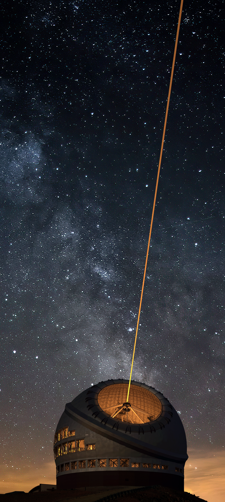

CSW
Common framework and services for TIO Components.
ESW
Executive software and UI Gateway application.
ESW Typescript Library (esw-ts)
CSW integration library for TIO UI Components.
ESW OCS Engineering UI
Engineering UI application for ESW Observatory Control Software.